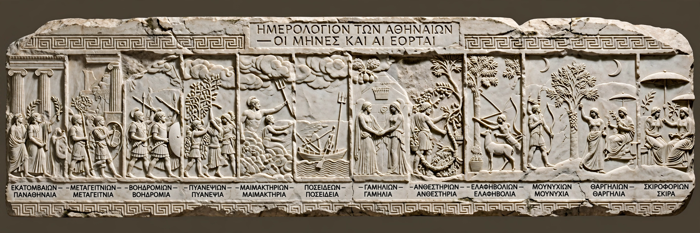

Attic calendar
| Attic calendar | |
|---|---|
| Region | Attica (ancient Athens) |
| Type | Lunisolar calendar |
| Months | 12 (29 or 30 days), with an intercalary month in some years |
| New year | Hekatombaion (midsummer) |

The Attic calendar or Athenian calendar is the lunisolar calendar that was in use in ancient Attica, the ancestral territory of the Athenian polis. It is the best documented of the many local ancient Greek calendars, and because Athens dominated the surviving literary record, it is often treated as the standard Greek calendar.
Months
The year began at midsummer with Hekatombaion, followed by Metageitnion, Boedromion, Pyanepsion, Maimakterion, Poseideon, Gamelion, Anthesterion, Elaphebolion, Mounichion, Thargelion and Skirophorion. Months alternated between 30 days ("full") and 29 days ("hollow"), giving a 354-day lunar year; to keep in step with the seasons an intercalary month, a second Poseideon, was inserted in some years at the discretion of the archons.
Structure of the month and parallel calendars
Days were counted in three decades tied to the phases of the moon: the waxing (days 1–10), the full (11–20) and the waning (21–end). Alongside the festival calendar, democratic Athens ran a separate bouleutic calendar dividing the year among the ten prytanies of the Council of Five Hundred, and a system of market and court days, so that an Athenian date might be specified in three different systems at once. Months were dominated by religious festivals — the Panathenaea, the City Dionysia, the Eleusinian Mysteries — which structured civic life.
See also: Ancient Greek calendars · Panathenaea · Lunisolar calendar